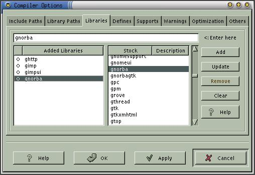

|
|
Anjuta Manual version 0.1Copyright (c) Kh. Naba Kumar Singh |
| Contents(Top) | Index | Shortcuts |
| PREV: Specifying Library paths | UP: Setting Compiler Options | NEXT: Defining macros |
Activate the menu item 'Settings->Compiler options' and Select the 'Libraries' page in the settings dialog box.
Select the library you want to add from the list of stock libraries and click Add. If the the library you want to add is not in the stock, then enter it manually in the entry box and click Add.
Repeat the above steps for all the libraries you want to add.
The name of the library should not contain the prefix 'lib' and suffix '.a'. These will be automatically added by the linker. For example, if the library you want to link with is 'libglade.a', then enter it as glade and not as libglade or libglade.a.
Removing and editing libraries:
To remove an entry, select the entry in the Added list and click Remove.
To edit an entry, select the entry in the Added list, modify it in the entry box and click Update.
To clear all the entries, click Clear.
Enabling and disabling Added libraries:
You will see a bubble just before the added libraries. This signifies that the library is active, that is, it will be specified during the build process.
You can temporarily disable the entry by double clicking the entry. Note that the bubble vanishes. Disabled libraries will not be specified during the build process (as though it has been removed).
You can re-enable it by double clicking again on the entry.
